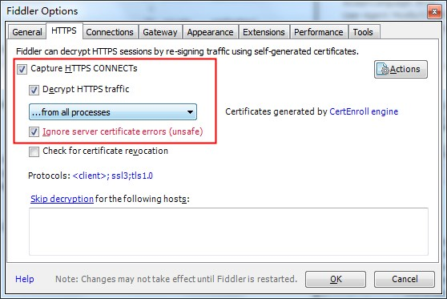
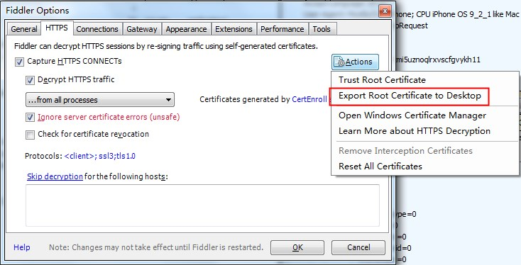
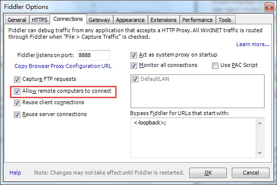

Fiddler拦截HTTPS请求
Fiddler 作为一个拦截网络请求的神器，程序猿们经常用它调试接口请求，虽然一直知道它可以拦截HTTPS请求，但是真正要用它来调试HTTPS请求的时候，还是踩了一些坑，正所谓好记性不如烂笔头，还写篇短文做个记录。
开启拦截 HTTPS 功能
Tools > Fiddler Option > HTTPS

Fiddler 默认是不拦截 https 请求的，因此需要先开启这个功能。
导出 Fiddler 根证书
Tools > Fiddler Option > HTTPS
Fiddler 拦截 https 请求后使用它自己伪造的CA证书进行签名操作，因此需要导出Fiddler的根证书，然后安装到需要拦截https请求的设备上。

安装 Fiddler 根证书
Fiddler 导出到桌面的根证书
FiddlerRoot.cer在 Windows 上可以直接安装使用，如果要装到 iOS 设备上，通过 Safari 访问http://[FIDDLER_SERVER]:[Port]/FiddlerRoot.cer就可以进入证书的安装页面了。允许 Fiddler 拦局域网请求
Tools > Fiddler Option > Connection

手机设置 host
设置 > 无线局域网 > 选中当前WIFI
设置 http 代理 IP 和端口，端口默认是 8888，如果有修改，以修改后的为准。
愉快地调试 https 请求吧 ~~